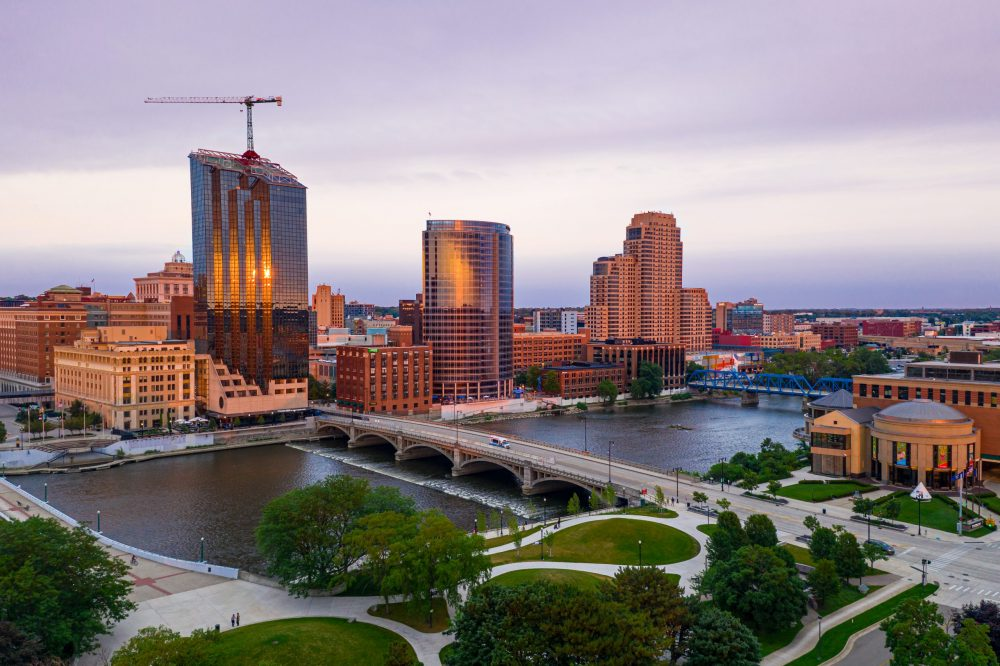

About Grand Rapids
Grand Rapids is the second-largest city in Michigan, located on the Grand River. It's famous for its furniture manufacturing industry, earning it the nickname "Furniture City." The city is also known for its vibrant arts scene, with the annual ArtPrize competition drawing artists and visitors from all over. Grand Rapids is home to several colleges and universities, including Grand Valley State University, which adds to the youthful and energetic vibe of the city. The downtown area has lots of cool attractions like the Grand Rapids Public Museum and the Frederik Meijer Gardens & Sculpture Park. With its mix of industry, education, and culture, Grand Rapids is a great place to live and visit.
- Population: 198,096
- Year Incorporated: 1850
- Region: West
- Classification: Urban
- Average Income: $61,634
Sources: US Census - Grand Rapids